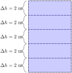

Set up integrals to solve problems involving work.
Subsection6.6.1Activities
Fact6.6.1.
Given a physical object \(m\text{,}\) the work done on that object is
\begin{equation*}
W=Fd=mad,
\end{equation*}
where \(F\) is the force applied to the object over a distance of \(d\text{.}\) Recall that force \(F=ma\text{,}\) where \(m\) is the mass of the object, and \(a\) is the acceleration applied to it.
Activity6.6.2.
Consider a bucket with 10 kg of water being pulled against the acceleration of gravity, \(g=9.8\) m/s\(^2\text{,}\) at a constant speed for 20 meters. Using Fact 6.6.1, what is the work needed to pull this bucket up 20 meters in kgm\(^2\)/\(s^2\) (or Nm)?
10 kgm\(^2\)/\(s^2\)
20 kgm\(^2\)/\(s^2\)
98 kgm\(^2\)/\(s^2\)
200 kgm\(^2\)/\(s^2\)
1960 kgm\(^2\)/\(s^2\)
Activity6.6.3.
Consider the bucket from Activity 6.6.2 with 10 kg of water, being pulled against the acceleration of gravity, \(g=9.8\) m/s\(^2\text{,}\) at a constant speed for 20 meters. Suppose that halfway up at a height of 10m, 5kg of water spilled out, leaving 5kg left. How much total work does it take to get this bucket to a height of 20m?
980 kgm\(^2\)/\(s^2\) or Nm
1470 kgm\(^2\)/\(s^2\) or Nm
1960 kgm\(^2\)/\(s^2\) or Nm
Activity6.6.4.
Suppose a 10 kg bucket of water is constantly losing water as it's pulled up, so at a height of \(h\) meters, the mass of the bucket is \(m(h)=2+8e^{-0.2h}\) kg. Figure153.Bucket 5 m in the air, to be hoisted by another 5 meters.
(a)
What is the mass of the bucket at height \(h_i=5\) m?
(b)
Assuming that the bucket does not lose water, estimate the amount of work needed to lift this bucket up \(\Delta h=5\) meters.
Activity6.6.5.
using the same the bucket from Activity 6.6.4, consider the bucket's mass at heights \(h_i=0, 5, 10, 15\) meters. Figure154.Bucket lifted 5 m at a time.
(a)
Fill out the following table, estimating the work it would take to lift the bucket 20 meters.
What is the total estimated work to lift this bucket 20 meters?
Activity6.6.6.
If we estimate the mass and work of the bucket from Activity 6.6.5 at height \(h_i\) with intervals of length \(\Delta h\) meters, which of the following best represents the Riemann sum of the work it would take to lift this bucket 20 meters?
Based on the integral chosen in Activity 6.6.7, compute the work it would take to lift this bucket 20 meters.
Observation6.6.9.A “how to” for applying integrals to physics.
Estimate the value over a piece of the problem with \(x\) value \(x_i\) over interval of length \(\Delta x\text{.}\)
Find a Riemann sum using (1) which estimates the value in question.
Convert the Riemann sum to an integral and solve.
Activity6.6.10.
Consider a cylindrical tank filled with water, where the base of the cylinder has a radius of 3 meters and a height of 10 meters. Consider a 2 meter thick slice of water sitting 6 meters high in the tank. Using the fact that the mass of this water is \(1000\cdot \pi (3)^2\cdot 2=18000\pi\) kg, estimate how much work is needed to lift this slice 4 more meters to the top of the tank.
Figure155.2m thick slice of water lifted 4m.
\(18000\pi\cdot 4\) Nm
\(18000\pi\cdot 9.8\) Nm
\(18000\pi\cdot 4\cdot 9.8\) Nm
\(18000\pi\cdot 6\) Nm
\(18000\pi\cdot 6\cdot 9.8\) Nm
Activity6.6.11.
Consider the cylindrical tank filled with water from Activity 6.6.10. We wish to estimate the amount of work required to pump all the water out of the tank. Suppose we slice the water into 5 pieces and estimate the work it would take to lift each piece out of the tank.

Figure156.2m thick slices of water.
(a)
Fill out the following table, estimating the work it would take to pump all the water out.
What is the total estimated work to pump out all the water?
Activity6.6.12.
Recall Activity 6.6.11. If we estimate the work needed to lift slices of thickness \(\Delta h\) m at heights \(h_i\) m, which of the following Riemann sums best estimates the total work needed to pump all the water from the tank?
Based on the Riemann sum chosen in Activity 6.6.12, which of the following integrals computes the work it would take to pump all the water from the tank?
Based on the integral chosen in Activity 6.6.13, compute the work it would take to pump all the water out of the tank.
Activity6.6.15.
Consider a cylindrical truncated-cone tank where the radius on the bottom of the tank is 10 m, the radius at the top of the tank is 100 m, and the height of the tank is 100m. Figure157.A slice at height \(h_i\) of width \(\Delta h\text{.}\)
(a)
What is the radius \(r_i\) in meters of the cross section made at height \(h_i\) meters?
(b)
What is the volume of a cylinder with radius \(r_i\) meters with width \(\Delta h\) meters?
(c)
Using the fact that water has density 1000 kg/m\(^3\text{,}\) what is the mass of the volume of water you found in (b)?
(d)
How far must this cylinder of water be lifted to be out of the tank?
Find a Riemann sum which estimates the total work needed to pump all the water out of this tank, using slices at heights \(h_i\) m, of width \(\Delta h\) m.
(b)
Use (a) to find an integral expression which computes the amount of work needed to pump all the water out of this tank.
(c)
Evaluate the integral found in (b).
Subsection6.6.2Videos
Figure158.Video: Set up integrals to solve problems involving work, force, and/or pressure